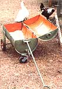
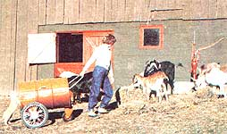
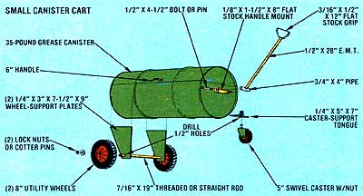
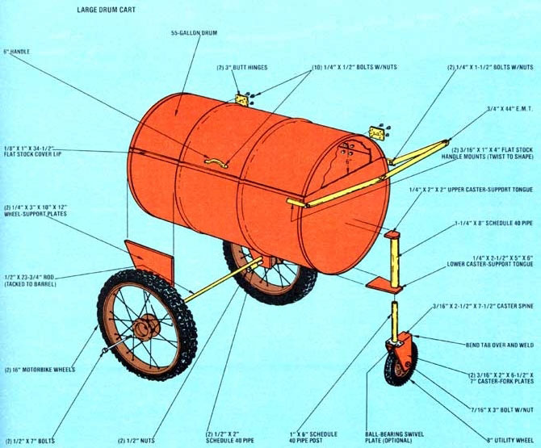

If the drudgery of lugging feed to your livestock has you searching for a more convenient way to get that barnyard chore done, you might want to have a go at building one-or both-of MOM's meal-bins-on-wheels.
The two fodder wagons pictured here (the larger one is made from an everyday 55-gallon drum, and the smaller from a less common 35pound grease container) are similar in design but unequally sized, allowing the builder to match his or her cart to the dietary needs of the critters to be fed. A pair of rear wheels, a swiveling front caster, and a pull handle make for manageable barnto-yard journeys, and a swing-open lid keeps the feed dry and safe from rodents between fill-ups.
Some cutting and welding are required to make the carts, but both of the tasks are pretty much basic in nature . . . and many folks will have the necessary scraps of metal and tubing (maybe even the wheels) lying around. Furthermore, as is the case with many of MOTHER's projects, the design is flexible. Don't be afraid to use water heater tanks, lawnmower wheels, or any other ready-to-hand components that'll get the job done. (After all, that's what making do is all about!)
With its big sturdy wheels, ample capacity, and tightly sealed lid, our larger carryall is quite a deluxe model. Kick off its construction by scribing a line across the diameter of the drum's top. Then measure 6 inches in from the edge along the mark and-using that point as a reference for your cutting lines-split the barrel as illustrated. File or grind any rough edges, replace the newly formed cart lid, and mark and drill mounting holes for the two butt hinges and the handle. Some short 1/4" bolts and matching nuts will secure those components nicely.
Next, cut a 34-1/2" piece of 1/8" X 1" flat stock. Form two contours in the strap, using heat if necessary, to correspond with the ribs on the barrel . . . and tack the strip to the facing edge of the lid with a series of welds.
Now, use your torch to trim the two wheel and two caster supports from suitable pieces of scrap metal . . . and while you're about it, cut the pipe stanchion, the axle strut and collars, the handle mounts, and the handle itself to length. Then simply drill a 1-1/4" hole in the lower caster support, near the narrow end . . . weld the stanchion to its tongues . . . and fuse the resulting assembly, hole down, to the drum (again, as shown in our illustration).
To attach the cart's rear axle, drill two 1/2" holes-one 1/4 inch above the other-in the smaller end of each of the two wheel supports. Then weld the axle strut into the plate's uppermost openings, and temporarily slip one of the 1/2" X 7" bolts through a wheel to find out how much axle is taken up by the hub. By pushing the protruding part of the bolt through one of the remaining holes in the support, you can determine exactly where to weld the collar and nut to the strut for each side. Finish up by tacking the upper part of the wheel supports to the sides of the barrel at its widest point. (Keep in mind that we used 16" motorbike wheels on our wagon . . . if you get your rollers from a different source, you'll have to find an axle of a dimension compatible with your selection, and you might even need to adjust the height of the support plates to suit the wheels you've chosen.)
If you can't locate a large caster assembly for the front of the cart, simply make one by welding two 3/16" X 2" X 6-1/2" X 7" plates to a 3/16" X 2-1/2" X 7-1/2" strap, at right angles, with the components' 6-1/2" and 7-1/2" edges touching. By bending the protruding 1" tab "around the corner" and tacking it to the side plates' 7" edges-then drilling 7/16" holes, in line, through the base of the parallel forks-you can duplicate a factory-made caster frame . . . and will only have to fasten a swivel plate and pipe post to one end of that component's flat upper surface, and install the wheel, to complete this particular fabrication task. (Note: The swivel plate can be eliminated if you simply weld the post directly to the caster frame and smooth its outside surface so it can spin freely within the stanchion when installed.)
The handle mounts are merely two short lengths of flat stock-each with a 1/4" hole drilled in one end-which are twisted slightly so the faces are parallel when the tabs are welded to the barrel's curving sides. Fasten these supports just below the bin's upper edge, and be sure to lay a bead or two across the heavy lip at the corner of the drum-where the mounts contact it-for additional strength.
Bend a 44" length of electrical metallic tubing to any shape you desire (make sure its ends are 21-1/2 inches apart, though, so they'll meet the mounts properly), either by using a manual bending tool or by applying heat . . . then drill 1/4" holes in the conduit and secure the handle to its mounting tabs with 1-1/2" bolts.
Once this is completed, you can prepare the barrel and its parts for painting, and give the whole affair a few coats with a nontoxic-recipe lacquer or enamel . . inside and out.
Finally, when the covering has dried, bolt the rear wheels in place (you might want to tack the exposed threads to the nut to secure the axle) and slip the swiveling caster into the stanchion . . . and you're ready to let the wagon help with your work!
MOTHER's junior feed wagon is ideal for doling out meals to such "wee beasties" as farmbred rabbits and fowl. If you can locate an empty grease canister at a service station, first remove a 5"deep section from its side, following the directions given for the large cart (remember that containers originally holding grease or other volatiles should be cut with a saw, rather than a torch). Smooth the exposed edges as before, clean any residue from inside the drum, and go on to fasten the two hinges and the handle with short bolts.
Since this model doesn't employ a cover lip (though you can surely install one if you wish), go ahead and cut out the two 1/4" X 3" X 7-1/2" X 9" wheel-support plates and the 1/4" X 5" X 7" caster tongue. The latter can be further shaped by trimming its corners to create a flat, 2-1/2" trapezoidal "nose".
Now, drill a 1/2" hole through each of these components as indicated, then weld the parts to the sides and lower edge of the container in such a way that it'll sit level when the wheels are installed. Bend your 1/8" X 1-1/2" X 8" strap into a U-shape with a 4" inside spread, and tack it to the drum, too, as illustrated. Next, weld the 3/4" X 4" pipe section to a piece of 1/2" X 28" electrical conduit . . . make a grip by forming a 3/16" X 1/2" X 12" length of flat stock into a loop and tacking it to the end of the metal tube . . . and fasten the handle assembly to its mount with a 1/2" X 4-1/2" bolt or a clevis pin.
Cover the entire cart with a nontoxicrecipe paint, and-after the coating has dried-bolt the swivel caster in place and install the wheels. (The axle, which can be either straight or threaded rod, should be tacked to the wheelsupport plates and will require the use of cotter pins or lock nuts to hold the wheels secure.) Now, you can "roll out the barrel"!
Regardless of which feed cart you choose to build (and you might well want to make both), it's a sure bet that it'll beat the old one(wo)man "bucket brigade" system by a mile . . . and the hauler will even be one up on a wheelbarrow, by virtue of its protective lid and its next-to-nothing cost!
|
 |
 |
 |
|
 |
|
|